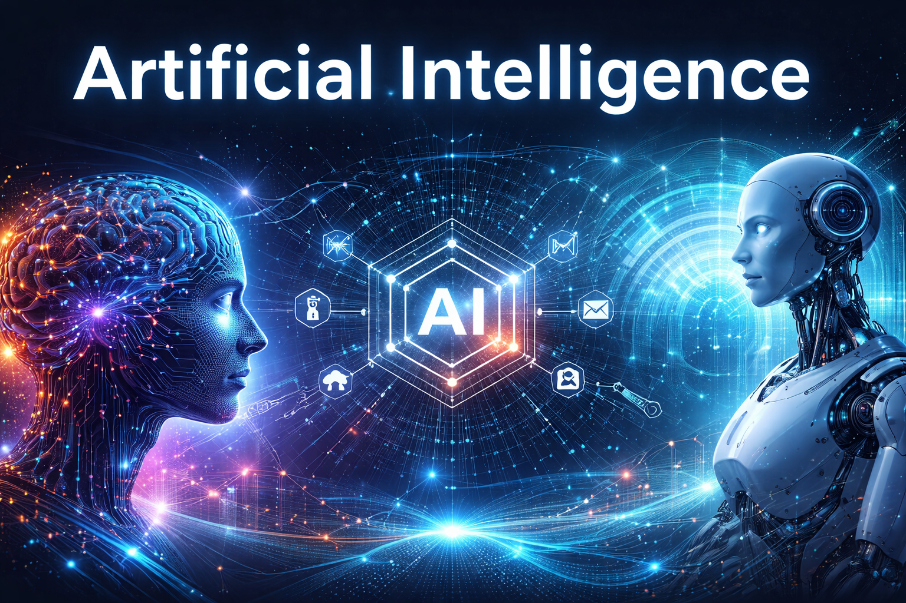

Welkom
Artificial Intelligence (AI) speelt een steeds grotere rol in ons dagelijks leven. Op deze website lees je wat AI is, hoe de technologie is ontstaan en welke invloed AI heeft op de maatschappij en op onze toekomst.
Deze website is gemaakt door Anna Huijsing als schoolopdracht. De opdracht was om een professionele website te bouwen met behulp van HTML voor de structuur van de pagina's en CSS voor de vormgeving en opmaak.
Tijdens het maken van deze website heb ik veel geleerd over het bouwen van webpagina’s. Ik heb onder andere gewerkt met navigatiemenu’s, een dropdown-menu, afbeeldingen, video’s en verschillende stijlen met CSS. Ook heb ik geprobeerd de website steeds verder te verbeteren door bijvoorbeeld knoppen, kleuren en lay-out mooier te maken.
Bij het ontwikkelen van de website heb ik ook gebruik gemaakt van ChatGPT om ideeën te krijgen en om mijn HTML en CSS verder te verbeteren. Hierdoor kon ik stap voor stap nieuwe onderdelen toevoegen en mijn website steeds verder uitbreiden.
Via het menu bovenaan de pagina kun je meer lezen over:
- Wat Artificial Intelligence precies is
- De geschiedenis van AI
- De mogelijke toekomst van AI
- De invloed van AI op de maatschappij
Deze website laat zien hoe belangrijk Artificial Intelligence inmiddels is geworden en waarom het belangrijk is om goed na te denken over de kansen en risico’s van deze technologie.
